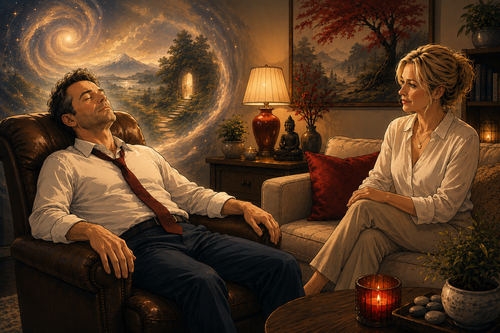

In time and space I touched your face,
called your name and felt some grace. Little did I know that this was out of place?
Nor would this lead to inner space…
Only you gave a gentle moment for the insane,
without a thought of internal pain.
Virtue won your heart back again and left me crying in the rain,
ending my time and space with your sweet taste,
and with no good reason I felt disgrace.
Deeds are done in vain to lance the flame, and mortal men have no eternal soul to blame.
Entered into the game— lives are thrown with a die and a lover's dance is made.
In short you gave a damn and even cared to plan,
when all of this is but a prance,
and really though,
the place for this is mostly done in France,
Madame!
Did you have to leave me with no recourse and all my shame?
And without any fame?
Reason would not let you chance it— or so you say— and with that love goes in transit.
Enduring passions are left panting,
and what I really miss are the trances that we made.
As decisions fade and our days return,
we realise that we have one life to play.
One immortal soul to catch our fall, and only time to create our precious now.
And will you, my dear, be so plain and leave all this to be no more or less than a silly game?
Or may you turn it inside out and breathe, and see without a doubt.
That once a love has met your soul and dreamt you free, you do know!
There's an eternal time and space, and for any moment love for you will be.
And all I ask is to touch your face, call your name and feel some grace.
With fond farewell I bid the lady a goodnight embrace,
and pray that one day I will look again upon her face.
So finally I say,
there is no reason for this rhyme,
apart from feelings that will not jade.
Or wilt and wither, while in your shade.